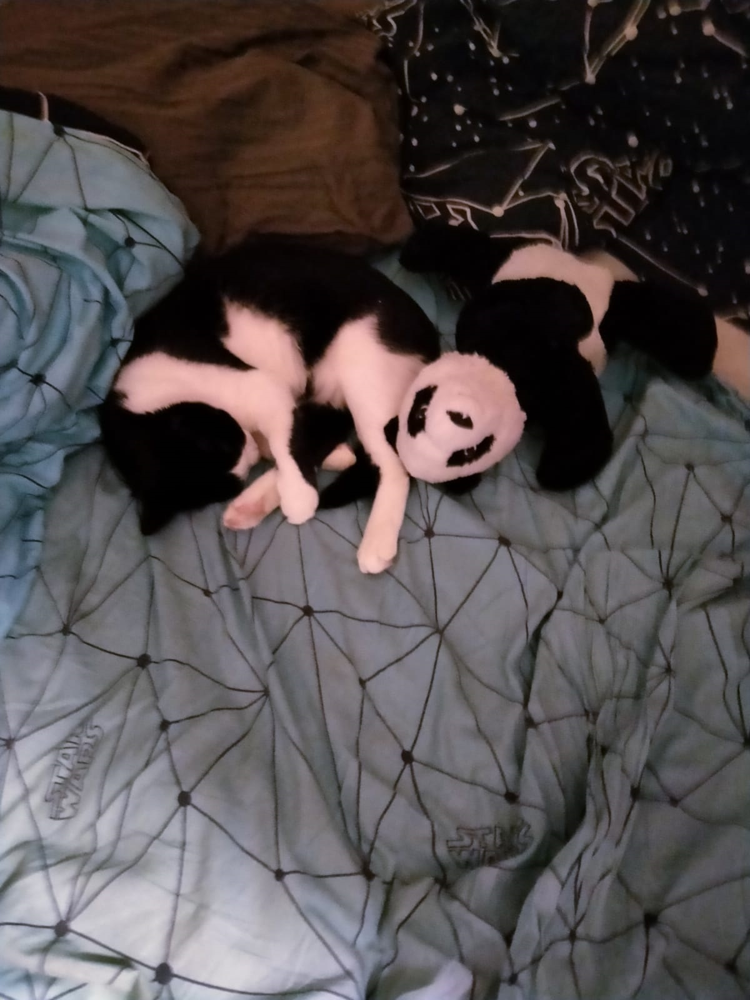
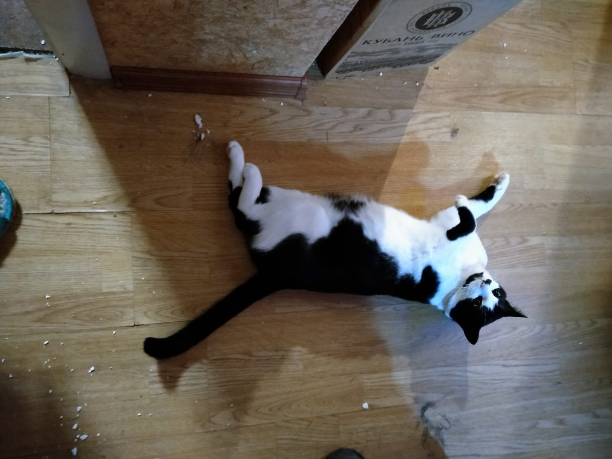
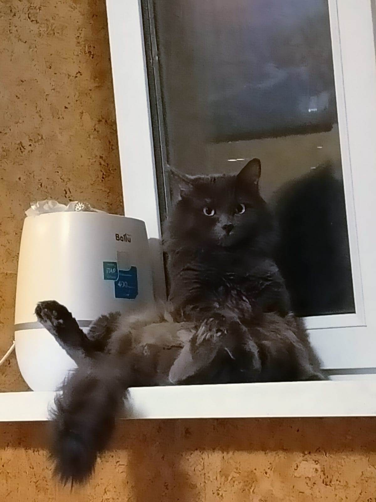
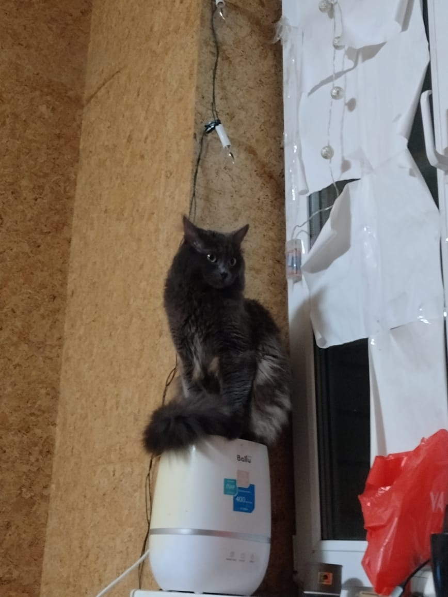

Кошка — домашнее животное, одно из наиболее популярных «животных-компаньонов».
С точки зрения научной систематики, домашняя кошка — млекопитающее семейства кошачьих отряда хищных.
Нередко домашнюю кошку рассматривают как подвид лесной кошки (Felis silvestris) — Felis s. catus,
однако, с точки зрения современной биологической систематики (2017 год), домашняя кошка является отдельным биологическим видом.
Наши коты
Белый (Беляш)


Был забран из автосервиса "Autotin". Летом 2021 года.
Особенности:
Двигает миску с водой.
Лижет нос Саши.
Пьет воду из раковины.
Боится когда его выносят за дверь.
Любит ходить в воде.
Рич (Ричард)


Появился зимой 2020 года. Был забран у соседей котенком.